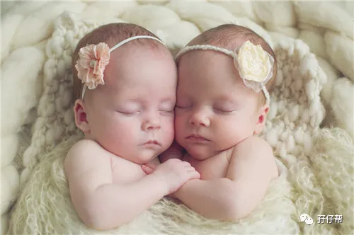
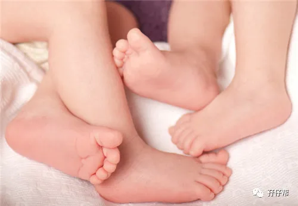

文|圆圈妈，一个文思如尿崩的双胎妈妈
图|来自网络，如有侵权，请联系删除
· 正 · 文 · 来 · 啦 ·
圆圈5月龄开始添加辅食，吃的第一口辅食是一块超大块的肥猪肉！
当然，不是真的吃进去，而是按照婆婆老家的习俗，拿一块炸出油的肥肉，涂在嘴唇上，并让他们舔一舔，意思是一辈子富贵，不愁没肉吃！
我想说，现在真正不愁吃喝的人，都是餐餐青菜水果拌沙拉，而且是生吃！生吃！生吃！
也许是开始添加辅食，能扛得住饿，也许是会爬会站，消耗了体力，也许是他们良心发现，不能这样坑爹妈...
9--12个月的圆圈，总的来说，睡眠问题不再是“劳民伤财”“劳师动众”的大工程。
今天的推文主题：
浅谈9月龄--12月龄的双胞胎睡眠特点
以下文字节选自《双胞胎睡眠圣经》
第二部分第五章
不同年龄段儿童对睡眠的不同需求
预产期过后的9~12个月
当你的双胞胎就要满一岁的时候,他们每天平均需要睡 14~14.5个小时,而晚上这一觉平均要达到11~11.5个小时。如果你的孩子们接受了睡眠训练,那么他们应该一觉睡到天亮。
当然一觉睡到天亮并不是说他们每天都会这样安静地睡个整觉,有时他们可能会半夜醒来,哭闹一会。在这种情况下,父母不用去理会,孩子们不久就会继续睡去。
双胞胎们在白天的时候依然会小睡两次,一次是在早上,另一次是在中午。两次睡觉的时间加起来大约2. 5~3个小时。
到了这个年龄段,如果孩子们在下午的时候又睡了觉,就一定会影响他们晚上睡觉的时间。当孩子还小的时候,说到日间的第三次小睡,是因为他们晚上上床睡觉的时间有点迟。
但是当他们快要到一岁的时候,家长们就应该坚决避免孩子们日间的第三次小睡,并且坚持让孩子每天晚上早点睡觉。
对于9~12个月的宝宝,比较理想的睡觉时间段是从5: 30~7: 30,只要孩子可以提前一点睡觉,哪怕只是提前10~20分钟,你就会发现他们跟之前会有很大变化。
如果做不到这一点就会无法保证孩子们所需要的睡眠时间,而且孩子们在下午4~5点表现得非常烦躁,接着就会出现孩子们在应该睡觉的时间哭闹,晚上容易醒来,或者早晨起得非常早等一系列问题。
一小部分(20%左右) 9~12个月的孩子可能从白天睡两次变成白天只睡一次。
如果孩子们是在晚上最佳时间段睡觉,那么他们的晨间小睡会逐渐消失,取而代之的是一次帮助他们补充精力、恢复精神的午睡。
如果孩子们睡觉的时间比较晚,那么他们从日间小睡两次到只需睡一次的过渡会比较困难,因为他们晚上睡觉的时间太短了,因此他们需要早晨再补一觉。
但是如果他们一整天只在上午的时候睡一觉,那么可想而知，下午的时候他们会多么痛苦。如果你的双胞胎们都只在早上睡了一觉,那么你一定要让他们在晚上早点上床睡觉,这样第二天他们会在中午睡觉,而且时间会比较久。
在某种程度上,家长是可以控制未满一岁的孩子在白天有两次小睡。
特 殊 情 况
本书提到的所有关于睡觉时间安排和宝宝们每天需要满足的日间睡眠时间都是需要认真对待的。
但是总有一些特殊的情况会发生,怎么办?比如你们需要带着孩子参加重要的家庭聚会。在这种情况下带着孩子去吧,即使让他们晚点睡也没有关系。
如果你按照我说的方法在平时让孩子按时睡觉,那么即使有一天睡眠时间与往常不同也不会对他们影响太多。
但是这样的特殊情况每个月出现1～2次就够了。如果某一天孩子的作息时间被打乱，并表现出极度疲劳的状态,看护者想要孩子们回到从前规律的睡眠状态只需要让他们在接下来的时间早早睡觉一个晚上就可以让他们回到从前良好的睡眠习惯。
个人拙见
「一小部分(20%左右) 9~12个月的孩子可能从白天睡两次变成白天只睡一次。」
圆圈就是这20%中的一对！
11个月大，他们经常会在6点钟就醒来嗨了，大概上午10点钟左右会眯一会儿，但这个打盹时间通常不会超过40分钟，而且打盹的地点不是在床上而是在推车上。
他们都是早上被公婆带出去玩之后，回来的路上在推车上睡着，有时候是两个都睡了，有时候只睡了一个。
回到家把他们挪到床上睡，刚挨着床就醒了，有时轻拍几下还能继续睡，有时干脆就不睡了，一直嗨到下午4点左右才肯睡！
而此时的他们虽然很困，但就是一副磨磨唧唧，哼哼唧唧的样子，放下就哭，挨着床就扭，仿佛对床有一股很深的怨气，打挺蹬腿扭腰，反正隔哪哪都不爽。
我经常提议让婆婆上午推他们出去玩，不要去太远的地方，应早点回来吃中饭，做好准备哄他们睡一次比较久的午觉。
可是…我的提议经常被大风吹去了！
有时候，好希望来一阵大风，顺便把我也吹走吧！反正不想面对这两个心机BOYS，睡前非要折腾一番，不知道要矫情给谁看啊！？
OK， 以上都不是太大问题，毕竟，再怎么折腾，他们终究会被安抚好，安静地睡下，接下来要说的特殊情况才是大问题。
别看婴儿小，屁事可真多，状况百出，尤其让人细思极恐的是感冒生病。
这绝对是睡眠训练的天敌！
意味着，一旦孩子有个头疼脑热，前期积累的那些所谓习惯，规律全都有可能“人间蒸发”...
圆圈9个多月，双双重感冒，先是发烧，接着流鼻涕，咳嗽...这一咳就断断续续持续了两个多月，跑了N趟妇幼保健院和儿童医院，均没有见效，差点以为是百日咳。
疾病带来的后果是，晚上他们的睡眠质量特别差，仿佛又回到他们二月龄那会儿。
鼻子堵住了，刚放下没一会儿就哭醒，或者好不容易睡着了，一阵子猛咳，又哭醒了…
没办法！
抱吧！一直抱着睡吧！
我和圆圈爸，一人抱一只，从厕所门走到厨房门，走到阳台，再走到每个房间门...然后无限循环...
还不能停，不能坐，更不能躺…
如果这些走的步数统计出来的话，估计可以绕行整个地球...不止一圈！
这个时候已经谈不上什么睡眠训练了，看着他们这样难受，实在于心不忍。
心里只想着，只要不咳嗽不发烧，怎么样都行，趴着睡，抱着睡或者摸奶睡....都冇问题！只求两祖宗早日恢复健康就行！
感冒彻底恢复后，他们开始作威作福了，习惯了抱睡后，又不肯自己睡了，之前半夜醒来不用安抚可以继续睡，现在被他们吃定了，必须折磨到你有反应为止！
阴功咯…！！
好不容易有点盼头，一次生病又打回原形。
还好有前期睡眠训练的基础，我们并没有被这种睡眠倒退折腾太久，10天左右，基本上恢复之前的规律睡眠状态。
其实，我已经做好放弃的准备了，抱睡就抱睡吧，反正过不了多久，我就抱不动他们了…
总觉得养娃路上，遇到的所有困难，能解决的自然是最好的，但总有解决不了的事情，此时，真的只能听天由命了，很幸运的是，总是在我觉得很绝望的时候，曙光就出现了！
他们突然就不再闹了！变得很乖！让人很不可思议。
-END-
一好文推荐一
一加入社群一
一关注孖仔帮一
点击“阅读原文”，直达双胞胎育儿网站www.sgguy.com.
喜欢这个睡眠圣经吗？，请点“在看”

